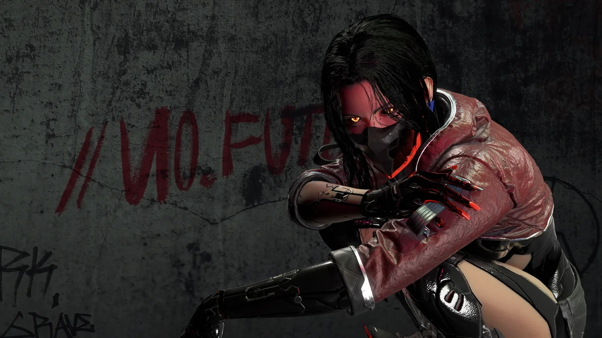
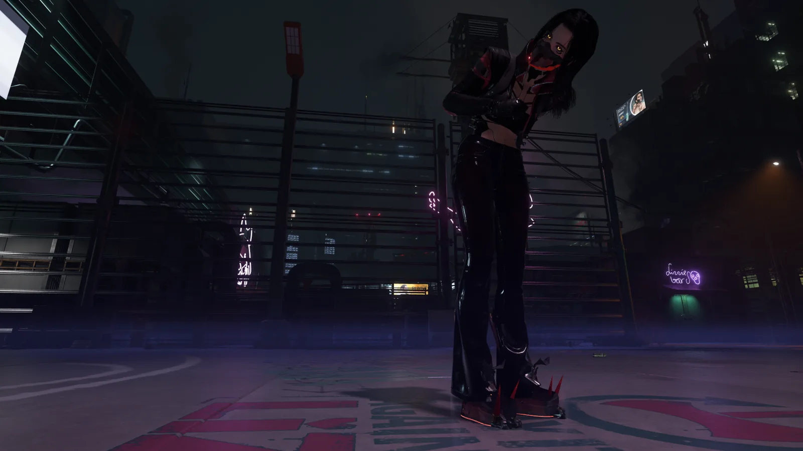
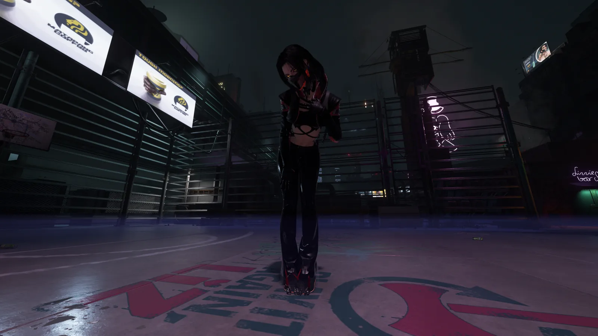
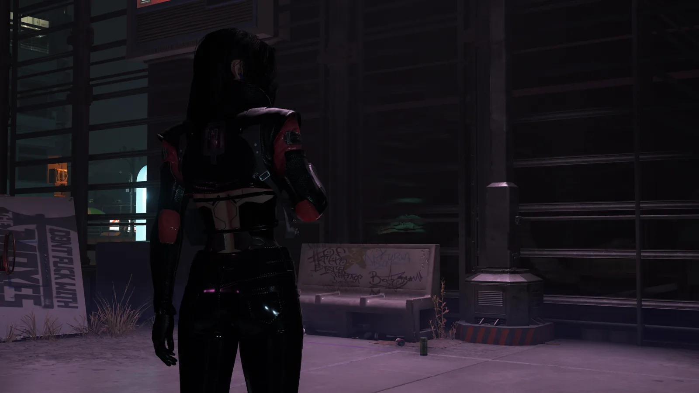

LIVE IMAGE // ARCHIVE- NAME
- Vanta Kuroda
- AFFILIATION
- Arasaka
- CLASS
- Experimental Full-Conversion Asset
- STATUS
- Standby
- PRIMARY TRAIT
- Adaptive / Uncontained
ARASAKA // RESTRICTED PERSONNEL ARCHIVE

ARS // VK-01 // EXPERIMENTAL ASSET
Arasaka's favorite experiment.

LIVE IMAGE // ARCHIVECORE READ
Highly engineered. Highly capable. Comfortable being something strange — but not comfortable believing she is allowed to need people.
Vanta was born into an Arasaka-connected Japanese family. Before the chrome, before conditioning, she was already difficult to contain: climbing, hiding, perching above eye level, squeezing into places adults could not reach, and vanishing into blind spots because that was simply where she felt most natural.
Her feral-cat behavior is not programming. It is one of the clearest surviving pieces of the girl who existed before the project.
Her father saw her unusual resilience and intelligence as potential to cultivate. Ambitious, polished, and deeply Arasaka-minded, he pushed hardest to place her in the experimental program. He likely believed he was giving her an advantage rather than sacrificing her.
His lesson was simple and poisonous: endure, improve, remain useful — and you have value.
Her mother loved her, but failed to stop any of it. She comforted Vanta after procedures, brushed her hair, sat with her, promised things would be okay — and still handed her back to the program.
Vanta came to despise the softness. Her mother's failure left a sharper lesson: love without courage is worthless.

Arasaka's next-generation cybernetic/full-conversion project: an elegant, controllable, independently functional weapon that could outperform conventional special-response assets without losing adaptive cognition.
Vanta was one of several young subjects. She formed attachments — especially to younger kids — and tried to protect them. They did not survive the process. She did.
Her lower face and jaw were likely the first major point of no return. Her normal mouth was replaced by a weaponized mechanical system: faceplate, mantis-like structures, and a direct food chute.
Not one trait. Everything. Neural compatibility, cyberware acceptance, reflex integration, recovery, cognition, pain tolerance, mission function, adaptation, and sheer survival. Every time another subject hit a limit, Vanta survived another step.
Resistance brought restraint, isolation, re-education, repetition, and sensory control. The recurring image is brutally simple: a freezing dark room, Vanta strapped to a table, almost no light, a voice overhead repeating instructions until language became reflex.
The system rewarded silence, precision, pain tolerance, emotional suppression, rapid recovery, and successful function. It taught her that being easy to manage was a form of goodness.

Vanta hates that the choice was taken from her. She does not hate what she is now. Her cyberware belongs to her, and she enjoys displaying it rather than hiding it.
Revealing clothing and visible chrome are choices. Maintenance access is different. Being displayed by her own choice does not give technicians or handlers ownership of her body.
When she likes someone, she stays near them. She follows, perches, sleeps nearby, occupies their blind spots, and seeks proximity without demanding conversation.
Darkness. Small hidden spaces. Weight. Rain. Mechanical rhythm. A familiar person nearby. Practical care reaches her far more reliably than pity or speeches.
She knows she is beautiful, dangerous, and capable. Yet she can still assume she is crowding people, asking for too much, or becoming difficult simply by needing comfort.
STATUS // STANDBY
Vanta does not maintain a conventional job. She is too specialized and too expensive to waste on routine security work. Arasaka keeps her close, monitored, maintained, and loosely free.
That freedom is functional containment. When allowed to wander, hide, socialize, and build routines, she stays near Arasaka voluntarily. When something requires her, she is deployed.
Adam chose the machine. Vanta had it forced onto her, then learned to love what she became.
Mass. Servos. Footsteps. Voice processing. Predictability. Baseline irritation. He does not pity her, and he does not require her to perform humanity.
She is not afraid of him, does not worship him, and treats his body like machinery worth understanding rather than a legend to fear.
Quiet proximity. Practical accommodation. Showing up. Sleeping nearby. Orbiting. Eventually climbing onto him.
Vanta has deep trauma around control and ownership. Adam is comfortable being Arasaka's weapon. He chose transformation. She survived it.
Curious, climbing, hiding, protective, difficult to contain.
Father advocated. Mother failed to stop it. Cohort formed.
The first unmistakably irreversible transformation.
Other subjects failed or died. Vanta became the successful prototype.
Behavioral control and activation state integrated.
Loosely autonomous, closely retained, activated only when Arasaka needs the thing it built.
黒田 ヴァンタ // VANTA KURODA